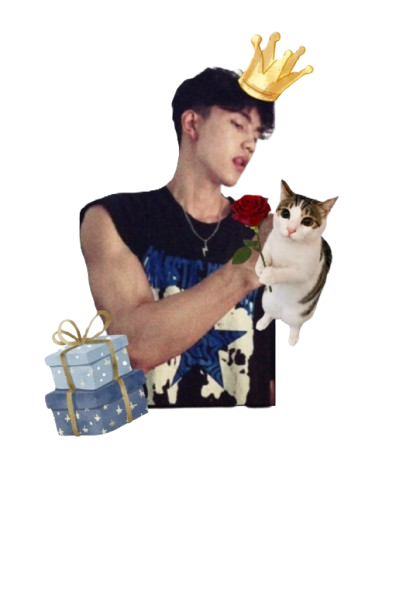
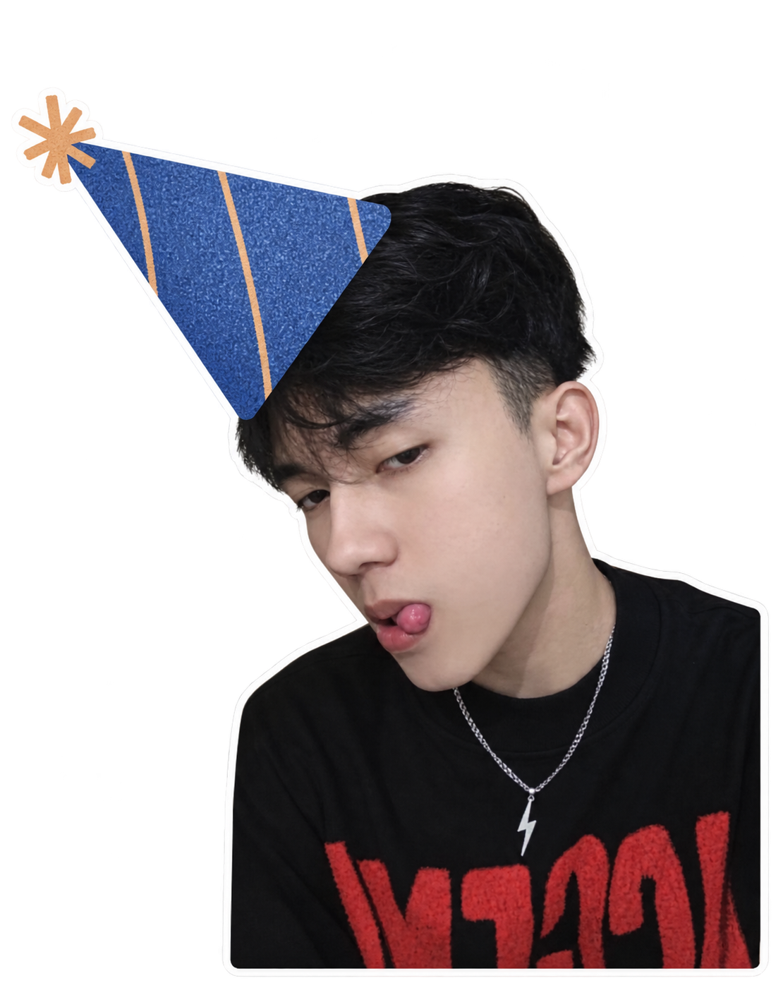

a little birthday present scrapbook for
ezadutt
beloved birthday.
13 september 2026
made especially for you ♡

chapter one
a tiny timeline
of us...
where it all started
it started from a random voice chat that i entered, and in between those random conversations and jokes... now you have become someone very special to me.
you became my person
without even realizing it, talking to you became the mosttt favorite parts of the day for me.
look at us ♡
we've made memories, shared stories, laughed at stupid things, and somehow made it this far together.
and this is only the beginning...
chapter two
100 reasons
why i love you.
because apparently, three things
were never going to be enough.
100 down. and somehow, i still have more to say, actually ♡
chapter three

your day ♡
a letter for you
HI THERE BABYYYY, selamat tanggal 13 september untuk yang ke-20 kalinya! Happyyy Birthdayyy ezadutt sayanggg
today is your day, and honestly, i don't even know where to start because there are sooooooooo many things that i want to say to you. i could simply say “happy birthday, i love you” and leave it there, BUT THAT DOESN'T FEELL ENOUGH YETTT. there are so so soooo many things about you that i appreciate, soooo many things i'm proud of, and so many things i wish for you. so today, let me say all of them.
first of all, thank you yaa sayangg. thank you for making it this far. thank you for surviving every version of yourself that had to go through things you probably never wanted to experience. thank you for getting through the days that felt heavy, the days when everything felt confusing, exhausting, or simply not okay. thank you for still being here, still trying, still waking up and choosing to keep going even when life doesn't always make it easy...
ik i probably don't know every single battle you've had to fight. there are things you've kept to yourself, things you've handled quietly, and moments where you had to be strong without anyone really knowing how hard it was for you. but even if i don't know all of them, i want you to know that i'm proud of you for making it this far, sayang.
you don't have to have everything figured out right now. you don't have to already be at the place you dream about. you don't have to be perfect ( even you alr perfect for me ) to deserve good things. you're allowed to still be learning, still be growing, still be figuring yourself out. and honestly, i think that's one of the most beautiful parts of being alive. knowing that there's still sooooo much ahead of you.
i'm proud of the person you are today, but i'm also proud of the person you're becoming ezadutt sayangg.
i'm proud of you for trying. proud of you for working toward the things you want. proud of you for every little step that maybe feels insignificant to you, but actually means so much. proud of you for continuing even when progress feels slow. sometimes, you might look at yourself and think you're not doing enough, but i hope you remember that progress doesn't always look big. sometimes progress is simply choosing not to give up.
oh, and thank you for being you.
thank you for all the little things you probably don't even realize matter. thank you for the conversations, the jokes, the random moments, the stupid things we laugh about, the comfort, the presence, and every memory we've made together. thank you for letting me know a part of you that not everyone gets to see. thank you for being someone i can care about this deeply.
i hope you know that your existence has meaning A LOTTTT. not because of how much money you make, not because of what you can achieve, and definitely not because of what other people expect from you. its just simply because you're you.
you deserve to experience a life that feels good to live.
i hope this new age brings you closer to everything you've been working for. i hope you get opportunities that make you excited about your future. i hope your hard work eventually turns into something you can look back on and say, “yeah, it was all worth it”
i hope you meet people who genuinely appreciate you, people who see your effort, respect your heart, and never make you question whether you're worth loving or caring for.
i hope you have more more moreee reasons to laugh until your stomach hurts. more random late night conversations. more peaceful mornings. more moments where you suddenly realize, “damnnn, life is actually pretty good tho”
i hope you get the kind of happiness that doesn't need to be forced yaa.
i hope you become financially stable, successful, independent, and proud of the life you've built for yourself. i hope every dream you've been keeping in your head slowly becomes something real. and when you finally reach those dreams, i hope you remember the version of yourself who once had nothing but hope and kept going anyway.
i hope you never lose that part of yourself.
please don't be too hard on yourself.
you are still growing.
you are still allowed to dream.
and you are still so, so, so worthy of good things.
there's still so much life waiting for you. so many places you haven't seen, people you haven't met, memories you haven't made, songs you haven't listened to, foods you haven't tried, random nights you haven't laughed through, and versions of yourself you haven't even met yet. so pleaseeee stay curious about what comes next.
i hope the future is kind to you.
i hope the universe gives you reasons to believe that all the things you've been through weren't for nothing. i hope one day you'll look back at the things that once made you cry, overthink, or feel lost, and realize that somehow they brought you closer to the person you were meant to become.
and if nobody has told you this enough, let me tell you today then,
i'm so so soooo proud of you.
not just when you're winning.
not just when you're doing well.
i'm proud of you even when you're struggling.
i'm proud of you when you're confused.
i'm proud of you when you're still trying to figure things out.
i'm proud of you for simply continuing.
thank you for surviving this far.
thank you for becoming the person you are today.
thank you for every effort you've made, even nobody noticed.
thank you for every time you chose to keep going.
and thank you for existing.
i hope this birthday isn't just another number changing. i hope it's a little reminder that you've made it through another year of your life, and that's something worth celebrating. you've grown, you've learned, you've changed, you've lost some things, gained some things, and somehow you're still here. and i'm genuinely happy that you're here.
i hope this year treats you gently. i hope it brings you peace when you need it, courage when you're scared, strength when you're tired, and happiness when you least expect it. i hope you receive all the love, kindness, opportunities, and good things you deserve. and most importantly, i hope you never forget how far you've already come. you've made it this far, and i'm so so soooo proud of you for that. keep going okayyy? there's still so much things waiting for you, and i genuinely hope you get to experience all of it.
P.S. love you so so sooooooo muchhh, even words can't even describe how much i love you.
chapter four
make a wish,
birthday boy.
once again,
happy birthday, ezadut sayangku cintaku nadiku
i love you always ♡